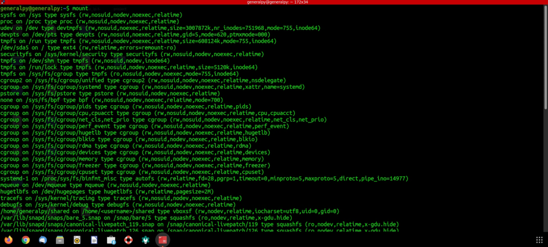
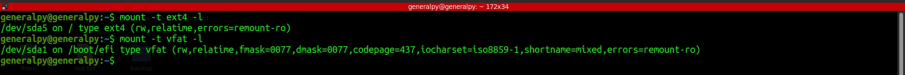

Linux file system is like an inverted tree with root as base and is hierarchial.
To access a file system that is on a different partition or disk then we have to mount that file system or logically attached it to an existing directory known as mount point.
To mount a file system we can use mount command. Without any arguments mount will just display all present attached file system.

There are many file systems listed because there are also some virtual file system available in linux.
To list a file system of particular time, use -t flag followed by file system type.

ext4 is for ext4 file system which is available in latest linux systems. vfat is for fat32 file system. -l stands for list.
An external file system is automatically mounted inside /media/username/diskname in modern systems.
todo usb
In linux every device is logically represented as a char device file stored in /dev directory.
To find name of char device use :
fdisk -l or dmesg or lsblk.
To mount a device by our own with our own options or with external options, we can use mount command.
mount path_of_device_in_dev destination_directory.We can mount same device at different places.
We can use -t option with mount to define file system type if not identified.
To unmount a device from a location, use umount and mounting path. We have to ensure that file system is not busy(files are not open). We can use -l or --lazy option to unmount lazily which is unmount when work is done.
To specify extra options during mounting, use -o with options.
To mount a iso, use loop option
mount path_to_iso destination_point -o loopWe can manage disks and partitions using fdisk but it is hard for beginners so we can use gparted which is a gui tool to manage partitions.